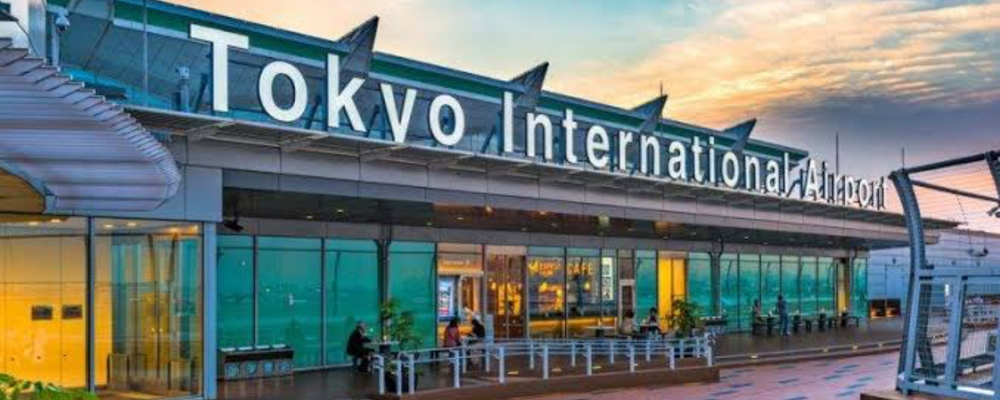
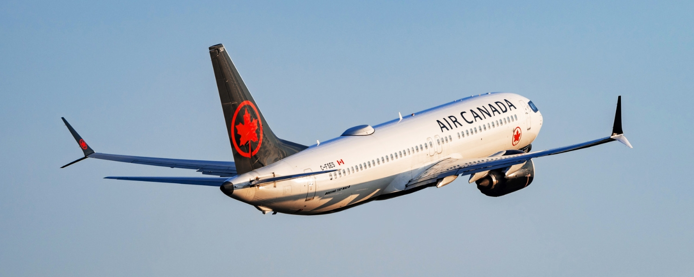
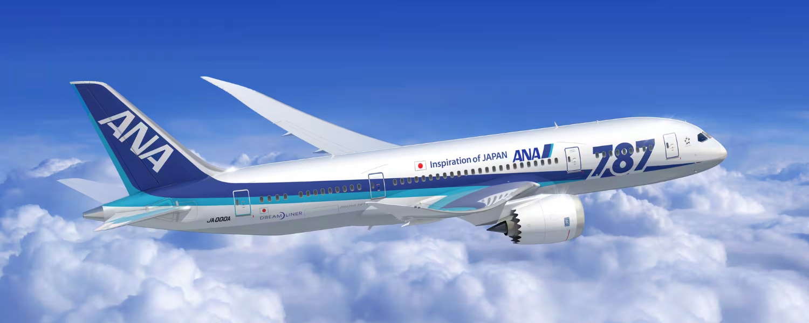
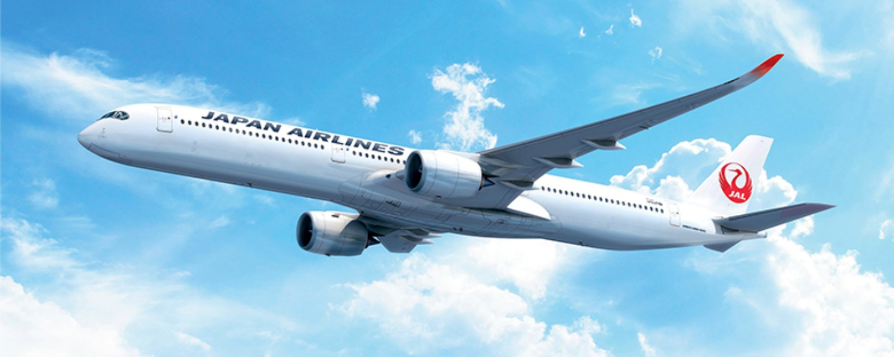
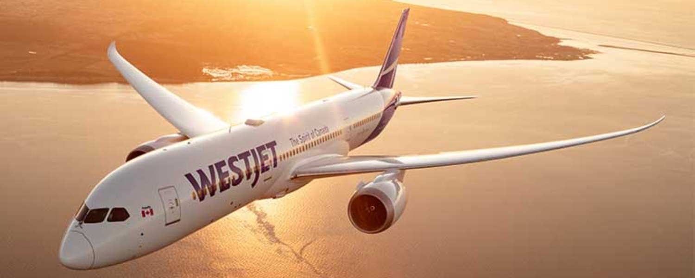

July 7, 2026
General TravelHow to Get to Tokyo from Canada: Every Route Explained
Tokyo, and Japan as a whole, are having a serious moment with travellers around the world, Canadians very much included, and it is easy to see why. The food, the culture, the history, the shopping, the sheer sensory rush of a city that feels both centuries old and impossibly futuristic at the same time. It is the kind of place that lives up to the hype.
Here is the good news for anyone feeling that pull: it is easier to fly to Tokyo from Canada than it has ever been. Few overseas destinations give Canadians this many nonstop choices, spread across full-service flag carriers, two of Japan's most celebrated airlines, and even a low-cost option for travellers watching their budget. You can cross the Pacific in a lie-flat business suite, in one of the roomiest economy cabins in the sky, or on a fare that leaves plenty left over for the trip itself.
The catch is that the best way to get there is not the same for everyone. It depends on which city you are flying from, what you value most in the air, and even which of Tokyo's two airports suits your plans once you land.
Here is your complete guide to flying from Canada to Tokyo.
Where You Fly Into
Tokyo is served by two major airports, and which one you land at depends entirely on your departure city and airline. Both are well connected to the city by fast, affordable trains, but they sit in very different places on the map, so it is worth knowing what to expect before you arrive.
Narita International Airport (NRT)
Source: Japan National Tourism Organization.
Narita is the airport most Canadian travellers will use, since the majority of nonstop flights from Canada land here. It sits about 60 kilometres east of central Tokyo, in neighbouring Chiba Prefecture, so the trip into the city is a proper journey rather than a quick hop. The upside is that you have two excellent express trains to choose from.
The fastest is the Keisei Skyliner, which reaches Nippori Station in just 36 minutes and Ueno Station in 41 minutes, where you transfer to the JR Yamanote Line for the rest of the city.
- Travel time: 36 to 41 minutes
- Frequency: roughly every 20 minutes
- Cost: around ¥2,570, or ¥2,310 with the discounted ticket bought online ahead of time
The alternative is the Narita Express (N'EX), run by JR. It is a little slower and slightly pricier, but its big advantage is that it runs directly into the major stations with no transfer needed.
- Travel time: roughly one hour to Tokyo Station
- Direct to: Tokyo Station, Shinjuku, Shibuya, and Yokohama
- Cost: about ¥3,140, and fully covered by the Japan Rail Pass
Choose the Skyliner if you want the fastest ride and are heading toward Ueno or the Yamanote Line side of the city, or the N'EX if you want a one-seat ride straight to Shinjuku, Shibuya, or Tokyo Station, or if you are travelling on a JR Pass.
Haneda Airport (HND)

Source: Japan Rail Pass.
Haneda is the closer of the two, sitting only about 15 kilometres from central Tokyo. From Canada, it is reached nonstop by ANA out of Vancouver and by Air Canada out of Toronto. There is no single best train here. You pick the line that matches your hotel, and both are quick and inexpensive.
- Keikyu Airport Line: around 13 minutes to Shinagawa for about ¥310
- Tokyo Monorail: around 18 minutes to Hamamatsucho for about ¥500, valid with the Japan Rail Pass
The one thing to keep in mind is that both Haneda trains drop you at the edge of the city rather than in the middle of it, so reaching most central neighbourhoods usually means one transfer. For Shinjuku, Shibuya, and other major hubs, you change to the JR Yamanote Line at Shinagawa or Hamamatsucho.
This is where Narita quietly evens the score. Even though it sits much farther out, the N'EX runs directly into Tokyo Station, Shinjuku, and Shibuya with no transfer at all, while from Haneda you will typically change trains once to reach those same neighbourhoods. Haneda still gets you into the city faster overall, but if a one-seat ride to a major station matters to you, the trip from Narita can be the simpler one.
Because Haneda is so close to the city, a taxi is a realistic option here in a way it rarely is from Narita, which can be worth it for groups or late-night arrivals.
So which airport is better to fly into?
For most travellers, Haneda wins on convenience. It is closer, the trip into the city is faster and cheaper, and the whole arrival tends to be lower stress, which matters most after a long flight. If your schedule lets you choose it, it is usually the easier landing.
That said, you often will not get the choice, and that is fine. From Canada, only ANA from Vancouver and Air Canada from Toronto fly into Haneda nonstop. Everyone else, including WestJet from Calgary, JAL and ZIPAIR from Vancouver, and Air Canada from Montreal, lands at Narita. Narita asks for a little more transit time, but with the Skyliner or the direct N'EX, that trip is smooth and straightforward either way.
Air Canada Flights to Tokyo

Source: Air Canada.
Air Canada offers by far the broadest Canadian network to Tokyo, with nonstop service from Vancouver, Toronto, and Montreal, reaching both of Tokyo's airports. As Canada's flag carrier and a Star Alliance member, it is also the natural choice if you collect Aeroplan and want to earn or redeem on the way over. Across these routes Air Canada flies two different aircraft, the Boeing 787-9 and the larger Boeing 777-300ER, so cabin layouts vary depending on your city and date. It is worth checking your aircraft when you book if the seating configuration matters to you.
Vancouver to Tokyo Narita
Daily, year-round service on the Boeing 787-9. Vancouver is the one real bright spot for choice on this whole map, and it is worth pausing on: it is the only Canadian city with real competition for your business, served by four different airlines flying to Tokyo. Everywhere else, you get a single carrier, WestJet from Calgary and Air Canada from Toronto and Montreal, so West Coast travellers have options the rest of the country does not.
Toronto to Tokyo Narita
Daily service on the Boeing 787-9 until the end of October 2026, then three times weekly through the winter until the end of March 2027, before returning to daily. Because the schedule tightens in the slower months, it is worth booking ahead if you are travelling over the winter.
Toronto to Tokyo Haneda
Daily, year-round service on the larger Boeing 777-300ER. This is the route to target if you want to land at Haneda, since it puts you much closer to central Tokyo, and the 777-300ER carries Air Canada's biggest business class cabin, making it a strong pick for a premium seat or an Aeroplan redemption.
Montreal to Tokyo Narita
Daily until the end of October 2026, then four times weekly through the winter until the end of March 2027, before returning to daily. It gives Quebec travellers their own nonstop across the Pacific without backtracking through Toronto or Vancouver.
Across all of these routes, Air Canada offers its full three-cabin experience. In Signature Class, you get lie-flat seats with direct aisle access, upgraded dining, and access to the Maple Leaf Lounge before you fly. Premium economy is a comfortable middle ground, with noticeably more room than economy (37 inch pitch, 20 inch width, and up to 8 inches of recline). Economy is a dependable long-haul product with meals, snacks, and personal entertainment screens at a standard 31 inch pitch. It does not always wow, but it is consistent and comfortable.
Boeing 787-9 (298 seats)
| Cabin | Seats | Layout |
|---|---|---|
| Business | 30 | 1-2-1 lie-flat |
| Premium Economy | 21 | 2-3-2 |
| Economy | 247 | 3-3-3 |
Boeing 777-300ER (400 seats)
| Cabin | Seats | Layout |
|---|---|---|
| Business | 40 | 1-2-1 lie-flat |
| Premium Economy | 24 | 2-4-2 |
| Economy | 336 | 3-4-3 |
Booking with Aeroplan: You can book Air Canada's own flights to Tokyo using Aeroplan points, but keep in mind that Air Canada uses dynamic pricing on its own metal, so the number of points required can move around based on demand, route, and how far ahead you book. It pays to check a few different dates to find the sweet spot.
ANA Flights to Tokyo

Source: ANA.
ANA (All Nippon Airways) is the only carrier flying nonstop from Vancouver into Haneda, the closer and more convenient of Tokyo's two airports. Quietly consistent rather than flashy, ANA is a favourite among frequent flyers for its polish and punctuality, and as a Star Alliance member it opens up one of the best-value ways to use Aeroplan points across the Pacific.
Vancouver to Tokyo Haneda
Daily, year-round service on the Boeing 787-9. This is ANA's dependable everyday link from the West Coast, and landing at Haneda puts you far closer to central Tokyo than a Narita arrival would.
Vancouver to Tokyo Narita
Seasonal service on the Boeing 787-9, running daily through the peak summer window from June 5 to August 31. If you are travelling in the height of summer, it adds a second ANA option out of Vancouver, this time into Narita.
ANA's onboard experience is where it earns its reputation. Business class uses a 1-2-1 staggered layout that gives every passenger direct aisle access, paired with generous storage, high privacy partitions, and some of the best bedding in the sky. The service leans into Japanese cuisine alongside Western options, delivered in a calm, unhurried style.
Premium economy is regarded as one of the better versions of the product anywhere, with roomy 38 inch legroom, though at 19.3 inches the seat is slightly narrower than Air Canada's.
Economy is the quiet standout: Japanese carriers are known for spacious economy cabins, and ANA's 34 inch seat pitch is the roomiest of any airline on the Vancouver to Tokyo route. If you are tall, that is worth keeping in mind when you choose who to fly.
Boeing 787-9 (215 seats)
| Cabin | Seats | Layout |
|---|---|---|
| Business | 48 | 1-2-1 lie-flat |
| Premium Economy | 21 | 2-3-2 |
| Economy | 146 | 3-3-3 |
Booking with Aeroplan: Because ANA is a Star Alliance partner, you can book its flights with Aeroplan points, and unlike Air Canada's own dynamic pricing, partner awards use fixed pricing. As long as award space is available, the points cost stays predictable, which can make ANA one of the strongest-value premium redemptions across the Pacific.
Japan Airlines Flights to Tokyo

Source: JAL.
Japan Airlines (JAL) has a long-standing reputation for exceptional service, and it is best known on this route for one thing in particular: quite possibly the most comfortable economy cabin crossing the Pacific.
Vancouver to Tokyo Narita
Daily, year-round service on the Boeing 787-9, giving West Coast travellers a dependable oneworld option into Tokyo's main international gateway. JAL flies its full three-cabin Sky Suite III aircraft here, with business, premium economy, and economy on board.
What makes JAL stand out is its economy layout. It is one of the only airlines in the world to fly its Boeing 787 with an 8-across 2-4-2 economy cabin, rather than the cramped 3-3-3 that nearly every other carrier uses. That single missing seat per row means noticeably wider seats, and paired with a roomy 33 inch pitch, it is spacious enough that JAL's economy won the Skytrax World's Best Economy Class Seat award in 2025. Meal service is a highlight too, with Japanese and Western options that feel carefully prepared.
For travellers who want an almost premium-economy feel from a regular economy ticket, JAL is one of the strongest picks across the Pacific. Business class is the lie-flat JAL Sky Suite III in a 1-2-1 layout, giving every passenger direct aisle access, with polished, understated service and a strong focus on dining. Between the two sits a dedicated premium economy cabin, JAL Sky Premium, for travellers who want a step up without the business fare.
Boeing 787-9 (239 seats)
| Cabin | Seats | Layout |
|---|---|---|
| Business | 28 | 1-2-1 lie-flat |
| Premium Economy | 21 | 2-3-2 |
| Economy | 190 | 2-4-2 |
Booking with points: JAL is a oneworld carrier, so it is not bookable with Aeroplan. Canadians can instead use British Airways or Iberia Avios (transferable from Amex and RBC points) or Alaska Mileage Plan, both of which price JAL awards on distance-based charts that can offer solid value from Vancouver.
ZIPAIR Tokyo Flights to Tokyo
Source: ZIPAIR Tokyo.
ZIPAIR Tokyo is the disruptor of the group. A low-cost carrier backed by Japan Airlines, it brings a very different philosophy to the route: low base fares, with almost everything else offered as a paid add-on.
Vancouver to Tokyo Narita
Five times weekly, year-round, on the Boeing 787-8. It is the only budget long-haul option on this list, and one of the few ways to cross the Pacific on a low fare.
ZIPAIR flies a single aircraft type with two cabins. Up front are 18 "ZIP Full-Flat" seats in a 1-2-1 layout, which are lie-flat beds similar to a business class seat but without the traditional service that usually comes with one. For travellers who value sleep over frills, they can be tremendous value, sometimes costing less than premium economy on other airlines.
Behind them are 272 Standard economy seats in a 3-3-3 layout with a typical 31 inch pitch. The trade-off is that nearly everything costs extra, including meals, checked bags, and seat selection, and there are no seatback screens, so you stream entertainment to your own device. ZIPAIR suits price-focused travellers who are comfortable with a no-frills experience and happy to plan their add-ons in advance.
Boeing 787-8 (290 seats)
| Cabin | Seats | Layout |
|---|---|---|
| ZIP Full-Flat | 18 | 1-2-1 lie-flat |
| Standard (Economy) | 272 | 3-3-3 |
How the Vancouver Cabins Compare
Because Vancouver is the only Canadian city with a choice of carriers, it is worth seeing how the four stack up where it matters most for a ten-hour flight: economy comfort. This is where the two Japanese airlines pull ahead, and where a tall traveller in particular might want to be choosy.
| Airline | Economy pitch | Layout | Notes |
|---|---|---|---|
| ANA | 34 in | 3-3-3 | Roomiest pitch on the route |
| JAL | 33 in | 2-4-2 | Widest seat, only 8-across |
| Air Canada | 31 in | 3-3-3 | Standard long-haul product |
| ZIPAIR | 31 in | 3-3-3 | No seatback screens, budget fares |
The short version: if legroom is your priority, ANA's 34 inch pitch leads the pack. If you want the widest seat, JAL's 8-across layout is in a class of its own. Air Canada is the familiar, consistent choice with the best onward Aeroplan connections, and ZIPAIR trades the frills for a fare that is hard to beat.
WestJet Flights to Tokyo

Source: WestJet.
WestJet gives Calgary its own nonstop link to Japan, and it is the only carrier flying the route from Alberta.
Calgary to Tokyo Narita
Daily, year-round service on the Boeing 787-9. WestJet expanded this route to daily year-round service, making it a reliable gateway to Asia from Western Canada, and through its codeshare with Japan Airlines you can connect onward from Narita to cities like Osaka and Nagoya on a single ticket.
WestJet flies its three-cabin Dreamliner here, with a lie-flat business cabin up front. The published configuration is 16 business class seats in a 1-2-1 layout, 28 premium economy seats in 2-3-2, and 276 economy seats in 3-3-3.
Boeing 787-9 (320 seats)
| Cabin | Seats | Layout |
|---|---|---|
| Business | 16 | 1-2-1 lie-flat |
| Premium Economy | 28 | 2-3-2 |
| Economy | 276 | 3-3-3 |
Booking with points: WestJet flights earn and redeem through WestJet Rewards rather than Aeroplan, so keep that in mind if you are a dedicated points collector deciding between carriers.
Tips for Finding Cheap Flights to Tokyo
Fares between Canada and Tokyo swing quite a bit depending on the season and how far ahead you book. A few strategies to help you land a better deal:
- Book early for the busy seasons. Cherry blossom season in late March and April, and fall foliage in November, are peak periods when fares climb fast.
- Look at shoulder season. May, early June, and September into October tend to offer strong value with thinner crowds.
- Fly from Vancouver if you can. With four airlines competing, West Coast fares are often the most competitive in the country.
- Consider ZIPAIR for rock-bottom fares. Just budget for the add-ons so you can compare the true all-in cost.
- Use points strategically. Aeroplan works well on Air Canada and Star Alliance partner ANA, while Avios or Alaska miles can unlock JAL.
- Watch for seasonal schedule changes. Several routes thin out over winter or run only in summer, so book ahead in the quieter months.
- Think about which airport suits you. Haneda gets you into the city faster, which can be worth targeting if your dates line up.
The Bottom Line
Tokyo has never been easier to reach from Canada, with nonstop flights from Vancouver, Calgary, Toronto, and Montreal across five different airlines.
Vancouver travellers are the most spoiled for choice, with four carriers to pick from and a real range of experiences, from JAL's award-winning economy to ANA's refined service to ZIPAIR's bargain fares. Everywhere else, Air Canada and WestJet keep the rest of the country connected with dependable daily service.
Whether you are chasing a lie-flat business seat, the roomiest economy cabin in the sky, or simply the lowest fare across the Pacific, there is a Tokyo route to suit you. If Japan is on your list, now is the time to start tracking fares and locking in your trip.
Happy travels!